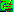
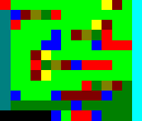

Jazyky rodiny brainfuck
by Jiří Znamenáček
brainfuck
Ukažme si rovnou klasický program „Hello World!“ zapsaný v jazyce brainfuck:
++++++++++[>+++++++>++++++++++>+++>+<<<<-]>++.>+.+++++++..+++.>++. <<+++++++++++++++.>.+++.------.--------.>+.>.
Jelikož všechno, co není příkazem jazyka brainfuck (a těch je pouze osm), je pokládáno za komentář, můžeme zdrojový kód i pěkně okomentovat:
Historie
Programovací jazyk brainfuck v moderní podobě je stvoření Urbana Müllera z roku 1993, ačkoli kořeny snah o vytvoření minimalistického Turing-complete programovacího jazyka se dají vystopovat dokonce o několik desítek let nazpět do minulosti – k prakticky stejnému výsledku totiž došel Corrado Böhm už v roce 1964 se svým jazykem P''.
Varianty interpretru
V podstatě existují dvě varianty jazyka:
- původní – Počítala s „paměťovou páskou“ v podobě pole o velikosti 30 000 buněk, všechny jednobajtové a na začátku nastavené na 0. Po této pásce se pohyboval „ukazatel“, který tak určoval, na které paměťové pozici se bude provádět aktuální operace. Na začátku programu ukazoval ukazatel na první buňku pole. Program se vykonává sekvenčně (není-li určeno jinak) a končí dosažením konce zdrojového kódu.
- obecná – Interpretr jazyka brainfuck je představován potenciálně nekonečnou páskou paměťových pozic, do kterých je možné uložit libovolně velké celé číslo, a ukazatelem na aktuální pozici. Před začátkem provádění programu má páska jednu jedinou paměťovou buňku, v níž je uložena 0, a ukazatel je nastaven právě na ni.
Struktura interpretru
Operací („rezervovaných slov“) jazyka brainfuck je přesně osm a zajišťují číselné operace s jednotlivými paměťovými místy, posun po paměťové pásce plus interakci s prostředím a smyčky. Obecně tedy interpretr jazyka brainfuck představuje čtveřice:
- instrukční ukazatel (instruction pointer) – ukazatel na příkazy vstupního programu
- datový ukazatel (data pointer) – ukazatel do paměti
- proud vstupních bajtů – proud bajtů (typicky ASCII-hodnoty) přicházejících ze vstupu (typicky z klávesnice)
- proud výstupních bajtů – jako předchozí, ale pro výstup (typicky monitor)
„Rezervovaná slova“
| příkaz | funkce | |
|---|---|---|
| > | posuň datový ukazatel na následující buňku | |
| < | posuň datový ukazatel na předchozí buňku | |
| + | inkrementuj buňku pod ukazatelem | |
| - | dekrementuj buňku pod ukazatelem | |
| . | vytiskni na výstup znak určený hodnotou aktuální buňky | |
| , | načti ze vstupu jeden bajt a ulož ho do aktuální buňky | |
| [ | začátek smyčky – „Poskoč (s instrukčním ukazatelem) vpřed za odpovídající ], je-li v aktuální buňce 0.“ | |
| ] | konec smyčky – „Vrať se zpět (s instrukčním ukazatelem) za odpovídající [, pokud v aktuální buňce není 0.“ |
Jakýkoliv jiný znak je považován za prázdnou operaci (nop), takže s trochou invence (tečka a čárka vám asi budou poněkud chybět) můžete v brainfucku psát pěkně komentované programy, jak bylo ostatně vidět už na prvním slajdu ^_~
Textové varianty jazyka
Není asi vůbec překvapivé, že když máme jazyk s pouhými osmi příkazy, dřív nebo později někoho napadne zapsat je nějak úplně jinak. Populární je například varianta jménem Ook!, která kóduje příkazy jazyka do následujících citoslovcí..
| Ook! | brainfuck | |
|---|---|---|
| Ook. Ook? | > | |
| Ook? Ook. | < | |
| Ook. Ook. | + | |
| Ook! Ook! | - | |
| Ook! Ook. | . | |
| Ook.Ook! | , | |
| Ook! Ook? | [ | |
| Ook? Ook! | ] |
..takže tradiční Hello World! pak vypadá takto:
Ook. Ook. Ook. Ook. Ook. Ook. Ook. Ook. Ook. Ook. Ook. Ook. Ook. Ook. Ook. Ook. Ook. Ook. Ook. Ook. Ook! Ook? Ook. Ook? Ook. Ook. Ook. Ook. Ook. Ook. Ook. Ook. Ook. Ook. Ook. Ook. Ook. Ook. Ook. Ook? Ook. Ook. Ook. Ook. Ook. Ook. Ook. Ook. Ook. Ook. Ook. Ook. Ook. Ook. Ook. Ook. Ook. Ook. Ook. Ook. Ook. Ook? Ook. Ook. Ook. Ook. Ook. Ook. Ook. Ook? Ook. Ook. Ook? Ook. Ook? Ook. Ook? Ook. Ook? Ook. Ook! Ook! Ook? Ook! Ook. Ook? Ook. Ook. Ook. Ook. Ook! Ook. Ook. Ook? Ook. Ook. Ook! Ook. Ook. Ook. Ook. Ook. Ook. Ook. Ook. Ook. Ook. Ook. Ook. Ook. Ook. Ook. Ook! Ook. Ook! Ook. Ook. Ook. Ook. Ook. Ook. Ook. Ook! Ook. Ook. Ook? Ook. Ook. Ook. Ook. Ook! Ook. Ook? Ook. Ook? Ook. Ook. Ook. Ook. Ook. Ook. Ook. Ook. Ook. Ook. Ook. Ook. Ook. Ook. Ook. Ook. Ook. Ook. Ook. Ook. Ook. Ook. Ook. Ook. Ook. Ook. Ook. Ook. Ook. Ook. Ook. Ook! Ook. Ook. Ook? Ook! Ook. Ook. Ook. Ook. Ook. Ook. Ook. Ook! Ook. Ook! Ook! Ook! Ook! Ook! Ook! Ook! Ook! Ook! Ook! Ook! Ook! Ook! Ook. Ook! Ook! Ook! Ook! Ook! Ook! Ook! Ook! Ook! Ook! Ook! Ook! Ook! Ook! Ook! Ook! Ook! Ook. Ook. Ook? Ook. Ook. Ook! Ook. Ook. Ook? Ook! Ook.
…
Grafické varianty jazyka
Z celé škály grafických variant se podíváme na dvě – jazyky brainloller a braincopter. Oba tyto jazyky mají společné, že instrukce programu kódují pomocí barev pixelů PNG-obrázků. Platí přitom několik dodatečných pravidel a omezení:
- Počáteční instrukce je v prvním pixelu obrázku, to jest v levém horním rohu, následující pak vpravo od něj (není-li hned první instrukce otáčecí, viz následující bod).
- Místo předem určeného způsobu načítání lineárního kódu brainfucku v rámci obdélníkového obrázku jsou data zakódována do 2D pomocí dvou dodatečných instrukcí, které otáčí instrukční ukazatel (pointer) doleva a doprava. Koncem programu tak není (nemusí být) očekávaný pravý spodní roh obrázku, nýbrž okamžik, kdy se pokusíme další instrukci načíst „mimo“ obrázek.
- Všechny testované programy vyžadují jednobajtová paměťová místa na brainfuckovské pásce => inkrementace 255 o jedničku dá 0, dekrementace 0 naopak 255.
- Všechny testované programy vyžadují tvrdou zarážku na paměťové pásce v nule (tj. nedá se jít pod adresu 0) – chce-li program pod nulu, zůstane na ní stát.
brainloller
Když si vzpomenete na první přednášku, tak následující obrázek (ten prťavý vlevo, vpravo je pouze jeho zvětšený náhled)..


..ve skutečnosti představuje kód v jazyce brailoller, který po přepisu do brainfucku dá následující program pro výpis Hello World!:
>+++++++++[<++++++++>-]<.>+++++++[<++++>-]<+.+++++++..+++.>>>++++++++ [<++++>-]<.>>>++++++++++[<+++++++++>-]<---.<<<<.+++.------.--------.>>+.
Dekódovací tabulka
V jazyce brainloller jsou instrukce zapsány přímo vybranými barvami. Přiřazení je přitom následující:
| barva | RGB | funkce | ||
|---|---|---|---|---|
| red | (255,0,0) | > | ||
| darkred | (128,0,0) | < | ||
| green | (0,255,0) | + | ||
| darkgreen | (0,128,0) | - | ||
| blue | (0,0,255) | . | ||
| darkblue | (0,0,128) | , | ||
| yellow | (255,255,0) | [ | ||
| darkyellow | (128,128,0) | ] | ||
| cyan | (0,255,255) | rotace IP doprava | ||
| darkcyan | (0,128,128) | rotace IP doleva | ||
| ostatní | n/a | nop |
Poznámky
Otáčecí instrukce byly do jazyka přidány poměrně zbytečně, PNG mohlo stejně tak dobře posloužit pro lineární zápis. Na druhou stranu je pravda, že otáčení činí život implementátorů zajímavějším ^_^
Dá se čekat, že hodně programů v brainlolleru bude asi zapsáno tak, že otáčecí instrukce pouze zajistí přechod na novou řádku a změnu směru čtení (ostatně jako v ukázce), a nebude se snažit o nějaké sofistikovanější kódování do 2D (a využívat tak části vlastního kódu vícekrát). Tak si ostatně můžete asi celkem snadno napsat vlastní generátor obrázků s kódem – stačí pouze navrhnout dostatečněrozměrný obrázek, aby se do něj vaše instrukce (po započítání otáčecích) vešly.
braincopter
Následující PNG-obrázek má rozměry 1729 x 1307 = 2 259 803 pixelů, tzn. že je potenciálně zdrojem více jak 2 MB dat. A v těchto datech je pomocí jazyka braincopter ukryta textová hra „The Lost Kingdom“:
{kind=link}
Dekódovací tabulka
Jazyk braincopter je varianta jazyka brainloller, která místo přesně určených deseti barev používá pro kódování příkazů jazyka brainfuck převodní formuli:
-
(65536*R + 256*G + B) % 11, respektive ekvivalentně(-2*R + 3*G + B) % 11
To znamená, že pro reprezentaci konkrétního příkazu je možné použít téměř libovolnou barvu (pro konkrétní pixel najdeme nejbližší s odpovídajícím zbytkem po dělení). V důsledku nejsou změny v obrázku téměř viditelné.
Jinak je princip úplně stejný jako u jazyka brainloller, dekódovací tabulka následuje:
| příkaz | funkce | |
|---|---|---|
| 0 | > | |
| 1 | < | |
| 2 | + | |
| 3 | - | |
| 4 | . | |
| 5 | , | |
| 6 | [ | |
| 7 | ] | |
| 8 | rotace IP doprava | |
| 9 | rotace IP doleva | |
| 10 | nop |